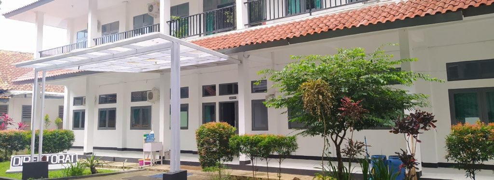

Politeknik Negeri Subang adalah perguruan tinggi negeri pertama di Kabupaten Subang. Pendidikan Politeknik Negeri Subang merupakan Pendidikan Tinggi Vokasi Program Diploma III yaitu program pendidikan yang bertujuan menyiapkan tenaga ahli, terampil, siap kerja, dan mampu bersaing di bidangnya yang ditempuh dalam kurun waktu 3 tahun atau 6 semester.
Jurusan di Politeknik Negeri Subang
| Prodi | Mahasiswa Aktif |
|---|---|
| D3 SI | 181 |
| D4 TRPL | 150 |
| Kesehatan | 100 |
Pilihan Prodi di Politeknik Negeri Subang
Daftar PMB